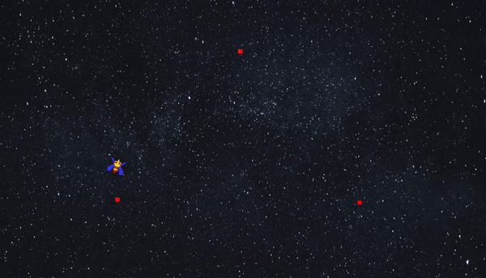
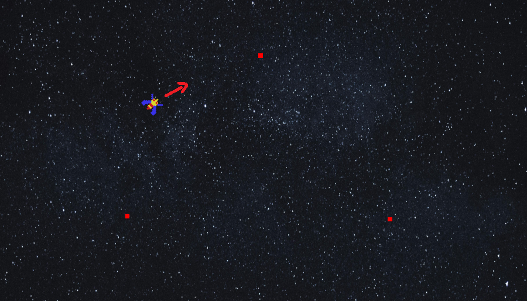

GAME LOGIC
유니티 엔진에서 구현한 게임 개발에 사용된 다양한 로직들을 소개합니다.
Unity2D - 타겟을 바라보는 오브젝트


오브젝트의 각도를 변경하여 목표를 바라보는 것을 구현했습니다.

오브젝트를 지정된 목표 좌표에 향하도록 회전시키고 있습니다. 회전을 시작하기 전에 현재 위치와 목표 위치 간의 방향을 계산하고, 그 방향으로 회전하는 방식입니다.
위의 스크립트는 이동 관련한 부분은 구현이 안된 예시 스크립트입니다.
RotateTowardsTarget() 함수는 현재 객체를 지정된 목표 좌표로 회전시키는 함수입니다. 회전하기 전에는 현재 위치와 목표 위치 간의 방향을 계산하고, 그 방향으로 시간에 따라 부드럽게 회전하며, 회전 속도는 rotationSpeed 변수에 의해 제어됩니다.
RotateTowardsTarget() 함수는 현재 객체를 지정된 목표 좌표로 회전시키는 함수입니다. 회전하기 전에는 현재 위치와 목표 위치 간의 방향을 계산하고, 그 방향으로 시간에 따라 부드럽게 회전하며, 회전 속도는 rotationSpeed 변수에 의해 제어됩니다.